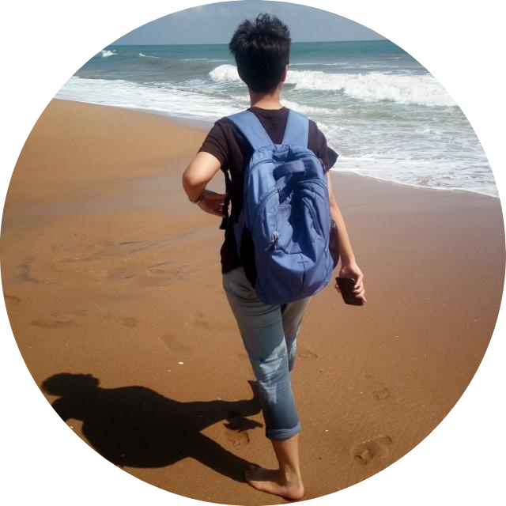
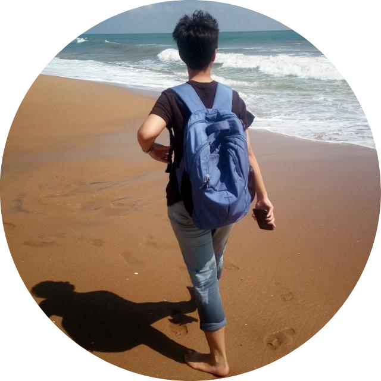

About
Hello! I am Soumya Negi .
I am an MS CS grad at the University of Southern California. This blog is a way of keeping track of my progress. After all, if I make things public I am less likely to be lazy. Here's hoping for a productive school year :-)
Here is a very old picture of me. I have it here because it makes me happy. It was a good day. 
I am an MS CS grad at the University of Southern California. This blog is a way of keeping track of my progress. After all, if I make things public I am less likely to be lazy. Here's hoping for a productive school year :-)
Here is a very old picture of me. I have it here because it makes me happy. It was a good day. 